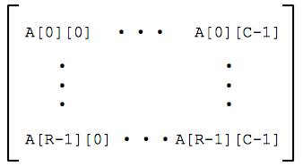
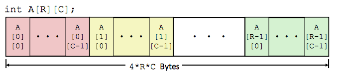
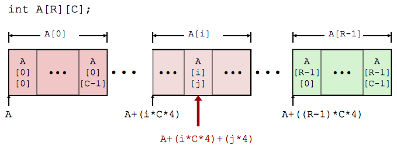
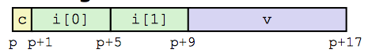
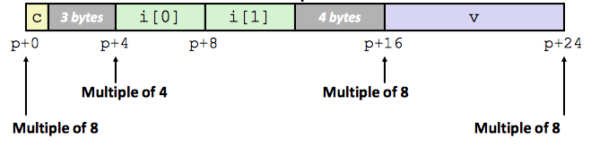
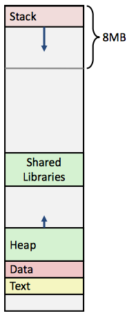

Machine-Level Representation of Programs
Level 5
Finally we discuss how data is maninpulated in assembly. For instance, how data structures like arrays are represented without special data types. With the representation of a series of values, the discussion of alignment becomes relevant when accessing memory. This leads us to a final topic of general Linux memory layout as well
Array Allocation and Access
Basic Principle: T A[L] represents an array of data type T and length L that is contiguously allocated region of L * sizeof(T) bytes in memory. The identifier A is used as a pointer to array element 0: Type T*
In general, register %rdi contains starting address of array, register %rsi contains array index, the desired digit is stored at at 4*%rdi + %rsi, and we use memory reference (%rdi,%rsi,4).
Multidimensional (Nested) Arrays
Declaration looks like:
T A[R][C],
which represents a 2D array of data type T containing R rows and C columns where the type T element requires K bytes. Thus the array size is calculated by
R * C * K
and the arrangement is done in a row-major order.
 Array elements are accessed by: A[i][j] , which is an element of type T and requires K bytes. Its address is calculated by:
A + i * (C * K) + j * K = A + (i * C + j)* K
In general, element access in a multi-level array is given by: Mem[Mem[univ+8*index]+4*digit], which means that two memory reads must be performed; first to get pointer to row array, and second to then access element within array.
Structure Representation
Structures represented as block of memory that is big enough to hold all of the fields, which are ordered according to declaration even if another ordering could yield a more compact representation. The compiler determines overall size and positions of fields, but the machine-level program has no understanding of the structures in the source code.
Generating pointer to array element is done by an offset of each structure member determined at compile time then computed as r + 4*idx
Alignment
Alignment is used on primitive data type requiring K bytes, where the address must be multiple of K. Alignment is required on some machines but advised on x86-64. The motivation for aligning data is for memory accessed by (aligned) chunks of 4 or 8 bytes (system dependent), and because it is inefficient to load or store datum that spans quad word boundaries. The compiler inserts gaps in structure to ensure correct alignment of fields
Above is a representation of a structure containing a char c, an array i[2], a double v and a pointer *p. Below is its representation aligned, where the address must be a multiple of K, the primitive data type of K bytes.
Within a structure, we must satisfy each element's alignment requirement. The overall structure placement has an alignment requirement of K = the largest alignment of any element. The initial address andstructure length must be multiples of K.
Memory Layout
x86-64 Linux memory layout conisists of the Stack at runtime with an 8mb limit; the Heap dynamically allocated as needed by malloc, calloc, etc.; Data which is statically allocated (e.g. global var, static vars, string constants); and Text and Shared Libraries, which are executable, read-only machine instructions
